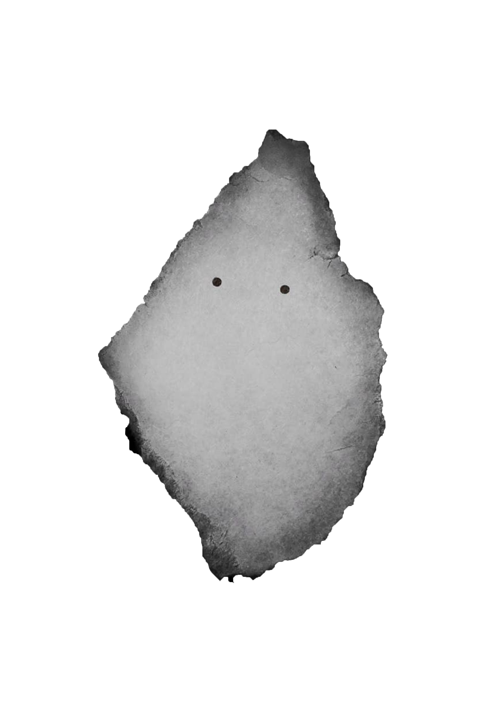

      
Найден объект:
парящая ложка
сфотографируйте, чтобы поймать призрака
Паранормальные явления:
0%
для начала записи нажимте кнопку
00:00:00:00
:
:
:
Запись
Time for animation
Time for animation